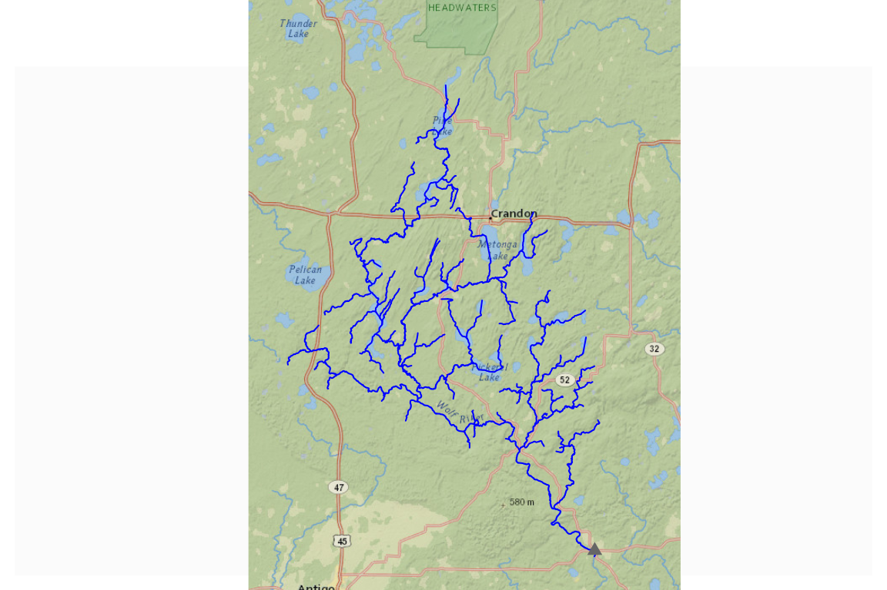
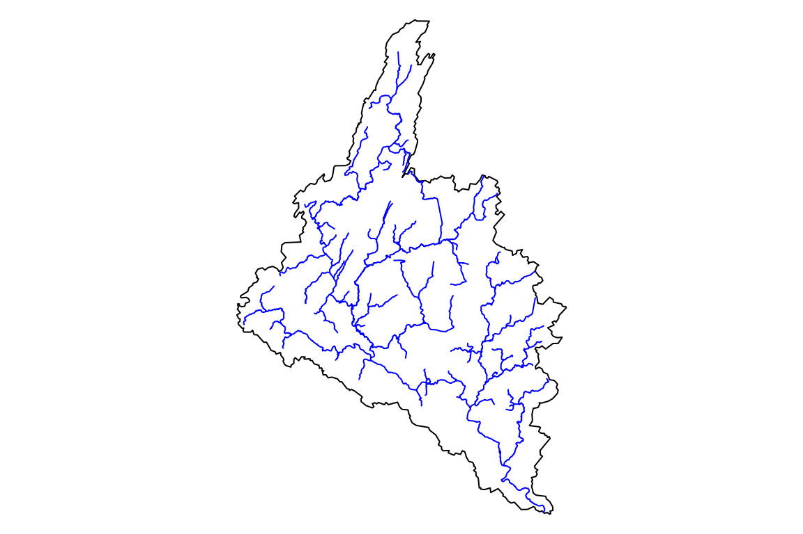
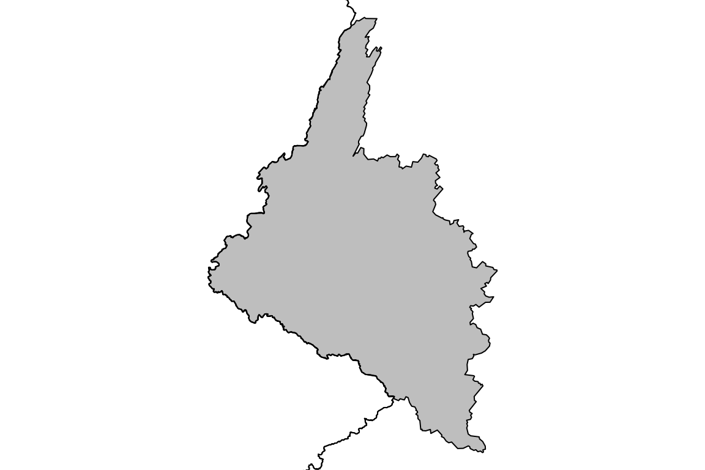
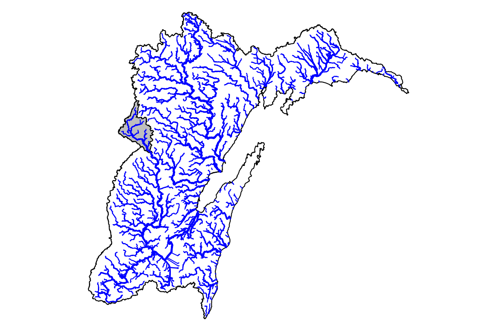
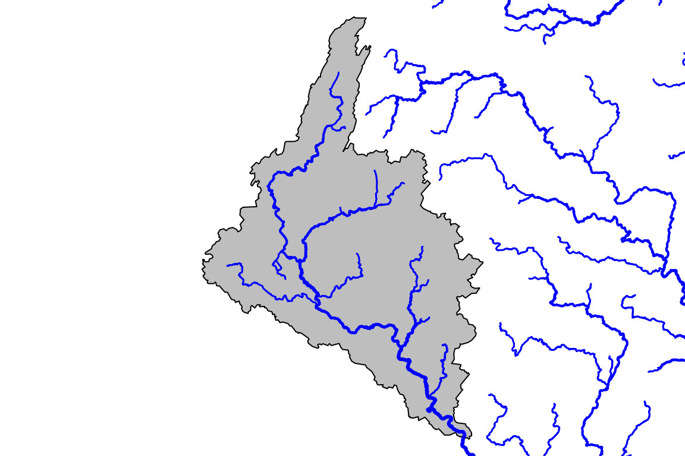
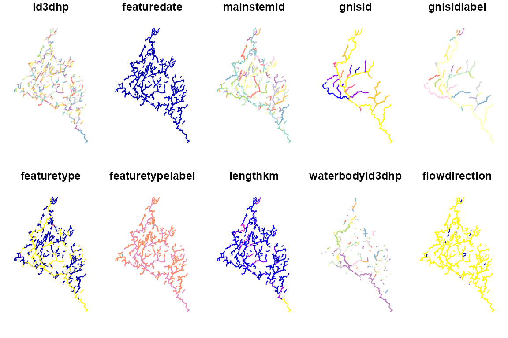
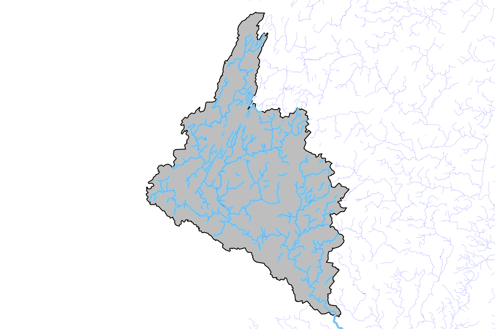
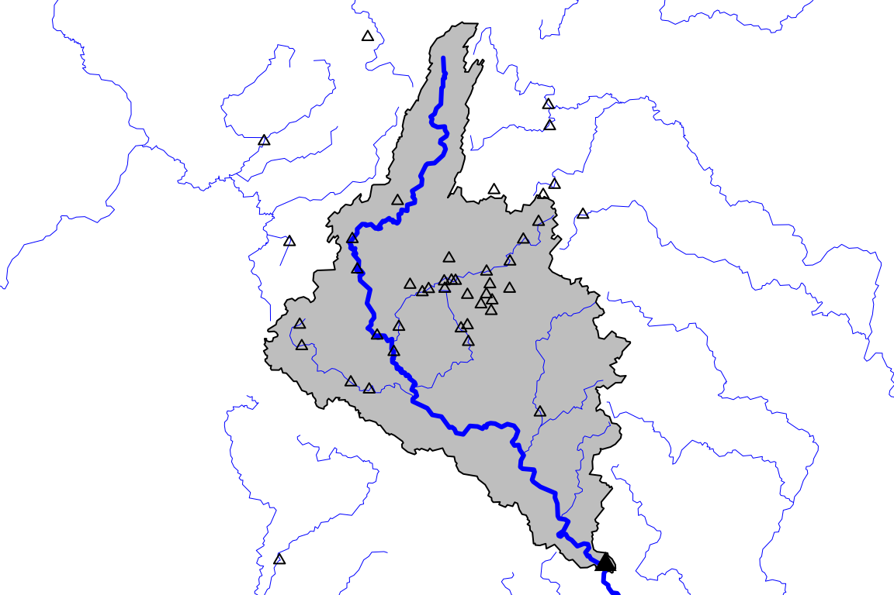

vignettes/get_data_overview.Rmd
get_data_overview.RmdSince it’s original release in 2019, data access in nhdplusTools has evolved and grown considerably. This vignette, prepared for a workshop in Summer 2024 shows the diversity of data available with nhdplusTools in one holistic overview.
The function naming in nhdplusTools related to data
access uses three common terms:
1. “download” will generally download complete data sets for use
locally. 2. “get” will pull a data subset from a web service. 3.
“subset” will pull a subset from a local file and, when available, a web
service.
The following summarizes specific data access functions available for
the datasets that nhdplusTools has supporting functionality
for.
download_nhdplusv2() - downloads a National seamless
geodatabaseget_nhdplus() - access NHDPlusV2 from a web
servicesubset_nhdplus() - subsets the National geodatabase OR
the web servicesubset_rpu() - subsets loaded NHDPlusV2 by raster
processing unitsubset_vpu() - subsets loaded NHDPlusV2 by vector
processing unitget_boundaries() - retrieves NHDPlusV2 processing unit
boundariesdownload_nhdplushr() - downloads staged
geodatabasesget_nhdplushr() - assembles nhdplushr datasets from
many staged databasesget_hr_data() - helps pull data out of staged databases
(used by get_nhdplushr())download_nhd()- downloads staged geodatabasesget_3dhp - access 3DHP from a web serviceget_geoconnex_reference() - access geoconnex reference
features from a web servicedownload_wbd() - download a National WBD
geodatabaseget_huc() - get a particular Hydrologic Unit Code from
a servicedownload_rf1() - download a National RF1
geodatabaseThe Network Linked Data Index plays a key role in discovery
nhdplusTools. It provides access to an easy network
navigation and basin boundary delineation tool. Behind the scenes, the
NLDI is based on the network of the NHDPlusV2 – so has some special
functionality related directly to that dataset. Functions that utilize
the NLDI include:
subset_nhdplus()plot_nhdplus()map_nhdplus()discover_nhdplus_id()get_nldi_basin()get_nldi_feature()get_nldi_index()navigate_network()navigate_nldi()get_split_catchment()get_raindrop_trace()In the demo below, we’ll choose a stream gage and show how to access data related to it from all the datasets that nhdplusTools works with as well as use some of the NLDI functionality in question.
For the sake of demonstration, we’ll look at the Wolf River at Langlade, WI – site ID “04074950”.
nhdplusTools allows us to start from a stream gage to build a subset of NHDPlusV2 data. Below, we’ll do just that and plot the results on a default map.
demo_dir <- nhdplusTools_data_dir()
site_id <- "USGS-04074950"
# use dataRetrieval::get_nldi_sources() to find other nldi sources
site <- list(featureSource = "nwissite",
featureID = "USGS-04074950")
site_feature <- get_nldi_feature(site)
upstream_network <- navigate_nldi(site,
mode = "UT", distance_km = 9999)
demo_data <- file.path(demo_dir, "data_demo.gpkg")
dataset <- subset_nhdplus(as.integer(upstream_network$UT_flowlines$nhdplus_comid),
nhdplus_data = "download", # download from a service
output_file = demo_data, # write the data to disk
return_data = TRUE, # return the data rather
flowline_only = FALSE, overwrite = TRUE)
#> All intersections performed in latitude/longitude.
#> Reading NHDFlowline_Network
#> Spherical geometry (s2) switched off
#> Spherical geometry (s2) switched on
#> Writing NHDFlowline_Network
#> Reading CatchmentSP
#> Spherical geometry (s2) switched off
#> Found invalid geometry, attempting to fix.
#> Spherical geometry (s2) switched on
#> Writing CatchmentSP
#> Spherical geometry (s2) switched off
#> although coordinates are longitude/latitude, st_intersects assumes that they
#> are planar
#> Spherical geometry (s2) switched on
#> Spherical geometry (s2) switched off
#> although coordinates are longitude/latitude, st_intersects assumes that they
#> are planar
#> Spherical geometry (s2) switched on
#> Spherical geometry (s2) switched off
#> although coordinates are longitude/latitude, st_intersects assumes that they
#> are planar
#> Spherical geometry (s2) switched on
names(dataset)
#> [1] "NHDFlowline_Network" "CatchmentSP" "NHDArea"
#> [4] "NHDWaterbody" "NHDFlowline_NonNetwork"
sapply(dataset, nrow)
#> NHDFlowline_Network CatchmentSP NHDArea
#> 389 370 20
#> NHDWaterbody NHDFlowline_NonNetwork
#> 473 8
old_par <- par(mar = c(0, 0, 0, 0))
plot_nhdplus(outlets = list(featureSource = "nwissite",
featureID = "USGS-04074950"),
nhdplus_data = demo_data, flowline_only = TRUE)
#> Zoom set to: 10
#> Warning in par(old_par): graphical parameter "cin" cannot be set
#> Warning in par(old_par): graphical parameter "cra" cannot be set
#> Warning in par(old_par): graphical parameter "csi" cannot be set
#> Warning in par(old_par): graphical parameter "cxy" cannot be set
#> Warning in par(old_par): graphical parameter "din" cannot be set
#> Warning in par(old_par): graphical parameter "page" cannot be set
The above is the original way NHDPlusTools supported access NHDPlusV2
data. A dedicated web service subset utility is available in
get_nhdplus – which is what subset_nhdplus()
calls behind the scenes.
Here we grab the basin for our site and request NHDPlus with its geometry as the Area of Interest.
basin <- get_nldi_basin(site)
subset <- get_nhdplus(AOI = basin, realization = "flowline")
#> Spherical geometry (s2) switched off
#> although coordinates are longitude/latitude, st_intersects assumes that they
#> are planar
#> Spherical geometry (s2) switched on
par(mar = c(0, 0, 0, 0))
plot(sf::st_geometry(basin))
plot(sf::st_geometry(subset), col = "blue", add = TRUE)
For NHDPlusHR data, which is much denser than NHDPlusV2,
nhdplusTools supports downloading four-digit Hydrologic
Unit Code staged geodatabases. The function get_huc() is
useful to discover the code needed here.
wolf_huc <- get_huc(basin, type = 'huc04')
#> Spherical geometry (s2) switched off
#> although coordinates are longitude/latitude, st_intersects assumes that they
#> are planar
#> Spherical geometry (s2) switched on
nrow(wolf_huc)
#> [1] 2
# it straddles hucs? Not really.
par(mar = c(0, 0, 0, 0))
plot(sf::st_geometry(basin), col = "grey")
plot(sf::st_geometry(wolf_huc), add = TRUE)
wolf_huc <- get_huc(site_feature, type = "huc04")
#> Spherical geometry (s2) switched off
#> although coordinates are longitude/latitude, st_intersects assumes that they
#> are planar
#> Spherical geometry (s2) switched on
nrow(wolf_huc)
#> [1] 1
# better!!
par(mar = c(0, 0, 0, 0))
plot(sf::st_geometry(wolf_huc))
plot(sf::st_geometry(basin), col = "grey", add = TRUE)
outdir <- file.path(nhdplusTools_data_dir(), "hr_access_demo")
dir.create(outdir)
#> Warning in dir.create(outdir):
#> 'C:\Users\dblodgett\AppData\Roaming\R\data\R\nhdplusTools\hr_access_demo'
#> already exists
download_dir <- download_nhdplushr(outdir, wolf_huc$huc4)
list.files(download_dir)
#> [1] "NHDPLUS_H_0403_HU4_GDB.gdb" "NHDPLUS_H_0403_HU4_GDB.jpg"
#> [3] "NHDPLUS_H_0403_HU4_GDB.xml"If we had asked for more HUC4 codes, additional gdb files would be in the directory we specified.
With this, we can use one of the two functions for access NHDPlusHR
data to load data from the directory. Here, we use the more complete
get_nhdplus() and set check_terminals=TRUE
which uses make_standalone() to ensure that the nhdplus
attributes are complete and self-consistent within the subset of data
returned.
nhdplushr <- get_nhdplushr(
download_dir,
layers = c("NHDFlowline", "NHDPlusCatchment", "NHDWaterbody",
"NHDArea", "NHDLine", "NHDPlusSink", "NHDPlusWall",
"NHDPoint", "NHDPlusBurnWaterbody", "NHDPlusBurnLineEvent",
"HYDRO_NET_Junctions", "WBDHU2", "WBDHU4","WBDHU6",
"WBDHU8", "WBDHU10", "WBDHU12", "WBDLine"),
check_terminals = TRUE)
#> Warning in CPL_read_ogr(dsn, layer, query, as.character(options), quiet, : GDAL
#> Message 1: organizePolygons() received a polygon with more than 100 parts. The
#> processing may be really slow. You can skip the processing by setting
#> METHOD=SKIP, or only make it analyze counter-clock wise parts by setting
#> METHOD=ONLY_CCW if you can assume that the outline of holes is counter-clock
#> wise defined
sapply(nhdplushr, nrow)
#> NHDFlowline NHDPlusCatchment NHDWaterbody
#> 53834 51815 34138
#> NHDArea NHDLine NHDPlusSink
#> 1283 207 582
#> NHDPlusWall NHDPoint NHDPlusBurnWaterbody
#> 2031 73 25146
#> NHDPlusBurnLineEvent HYDRO_NET_Junctions WBDHU2
#> 51938 53555 1
#> WBDHU4 WBDHU6 WBDHU8
#> 1 2 18
#> WBDHU10 WBDHU12 WBDLine
#> 107 629 2031At a lower level, we can use get_hr_data() to access
particular layers. Here, rename=TRUE causes the nhdplushr
names to be normalized to nhdplusTools conventions using
align_nhdplus_names().
NOTE: “NHDPlusID” from nhdplushr is replaced with the name “COMID”. This attribute is merely a unique integer identifier and should not be assumed to relate to anything outside the context of a given dataset.
nhdplushr <- get_hr_data(list.files(download_dir, pattern = ".gdb", full.names = TRUE),
layer = "NHDFlowline", rename = TRUE)
names(nhdplushr)
#> [1] "Permanent_Identifier" "FDate"
#> [3] "Resolution" "GNIS_ID"
#> [5] "GNIS_Name" "LENGTHKM"
#> [7] "REACHCODE" "FlowDir"
#> [9] "WBArea_Permanent_Identifier" "FTYPE"
#> [11] "FCODE" "MainPath"
#> [13] "InNetwork" "VisibilityFilter"
#> [15] "Shape_Length" "COMID"
#> [17] "VPUID" "Enabled"
#> [19] "Shape" "StreamLeve"
#> [21] "StreamOrde" "StreamCalc"
#> [23] "FromNode" "ToNode"
#> [25] "Hydroseq" "LevelPathI"
#> [27] "Pathlength" "TerminalPa"
#> [29] "ArbolateSu" "Divergence"
#> [31] "StartFlag" "TerminalFl"
#> [33] "UpLevelPat" "UpHydroseq"
#> [35] "DnLevel" "DnLevelPat"
#> [37] "DnHydroseq" "DnMinorHyd"
#> [39] "DnDrainCou" "FromMeas"
#> [41] "ToMeas" "RtnDiv"
#> [43] "Thinner" "VPUIn"
#> [45] "VPUOut" "AreaSqKM"
#> [47] "TotDASqKM" "DivDASqKm"
#> [49] "MaxElevRaw" "MinElevRaw"
#> [51] "MaxElevSmo" "MinElevSmo"
#> [53] "Slope" "SlopeLenKm"
#> [55] "ElevFixed" "HWType"
#> [57] "HWNodeSqKm" "StatusFlag"
# Great Lakes coast are flowlines -- remove for visuals
gl_coast <- c(get_DM(nhdplushr, 60002700000331),
get_DM(nhdplushr, 60002700049157))
#> defaulting to comid rather than permanent_identifier
#> defaulting to comid rather than permanent_identifier
plot_data <- dplyr::filter(nhdplushr, FCODE != 56600 & StreamOrde > 2 & !COMID %in% gl_coast)
par(mar = c(0, 0, 0, 0))
plot(sf::st_geometry(wolf_huc))
plot(sf::st_geometry(basin), col = "grey", add = TRUE)
plot(sf::st_geometry(plot_data), lwd = plot_data$StreamOrde / 3, col = "blue", add = TRUE)
par(mar = c(0, 0, 0, 0))
plot(sf::st_geometry(basin), col = "grey")
plot(sf::st_geometry(plot_data), lwd = plot_data$StreamOrde / 2, col = "blue", add = TRUE) BONUS DEMO: Say we want to know where our stream gage is on the river in question…
get_flowline_index() and
disambiguate_flowline_indexes() are your friends.
potential_matches <- get_flowline_index(nhdplushr,
points = site_feature,
search_radius = units::as_units(500, "m"),
max_matches = 5)
#> defaulting to comid rather than permanent_identifier
#> Warning in match_crs(x, points, paste("crs of lines and points don't match.", :
#> crs of lines and points don't match. attempting st_transform of lines
#> Warning in index_points_to_lines.hy(x, points, search_radius = search_radius, :
#> converting to LINESTRING, this may be slow, check results
potential_matches
#> id COMID REACHCODE REACH_meas offset
#> 1 1 60002700035364 04030202000126 34.9737 0.0002166323
#> 2 1 60002700000908 04030104001542 49.1370 0.0177673341
#> 3 1 60002700036849 04030104001542 81.5378 0.0224609122
#> 4 1 60002700035750 04030104000533 31.4940 0.0244823037
#> 5 1 60002700034888 04030104000136 100.0000 0.0247855142
site_meta <- dataRetrieval::readNWISsite(gsub("USGS-", "", site_feature$identifier))
sqmi_to_sqkm <- 2.59
da_df <- data.frame(id = 1, drainagearea = site_meta$drain_area_va * sqmi_to_sqkm)
# uses nearest drainage area match
disambiguate_flowline_indexes(potential_matches,
flowpath = dplyr::select(nhdplushr, COMID, TotDASqKM),
hydro_location = da_df)
#> # A tibble: 1 × 5
#> id COMID REACHCODE REACH_meas offset
#> <dbl> <dbl> <chr> <dbl> <dbl>
#> 1 1 6.00e13 04030202000126 35.0 0.000217If what you really need is the base NHD, which is now a static
dataset, the pattern is just the same as with nhdplushr using
download_nhd().
outdir <- file.path(nhdplusTools_data_dir(), "nhd_access_demo")
dir.create(outdir)
#> Warning in dir.create(outdir):
#> 'C:\Users\dblodgett\AppData\Roaming\R\data\R\nhdplusTools\nhd_access_demo'
#> already exists
download_dir <- download_nhd(outdir, wolf_huc$huc4)
list.files(download_dir)
#> [1] "NHD_H_0403_HU4_GDB.gdb" "NHD_H_0403_HU4_GDB.jpg" "NHD_H_0403_HU4_GDB.xml"
nhd_gdb <- list.files(download_dir, pattern = ".gdb", full.names = TRUE)
sf::st_layers(nhd_gdb)
#> Driver: OpenFileGDB
#> Available layers:
#> layer_name geometry_type features fields
#> 1 ExternalCrosswalk NA 1 6
#> 2 NHDFCode NA 126 13
#> 3 NHDFeatureToMetadata NA 277698 2
#> 4 NHDFlow NA 67048 4
#> 5 NHDFlowlineVAA NA 53733 22
#> 6 NHDMetadata NA 312 21
#> 7 NHDProcessingParameters NA 5 2
#> 8 NHDReachCodeMaintenance NA 62818 6
#> 9 NHDReachCrossReference NA 78278 11
#> 10 NHDSourceCitation NA 350 13
#> 11 NHDStatus NA 0 3
#> 12 NHDVerticalRelationship NA 0 3
#> 13 CLIPPOLY Multi Polygon 0 2
#> 14 NHDWaterbody 3D Multi Polygon 34143 13
#> 15 NHDPointEventFC Point 2705 14
#> 16 NHDPoint 3D Point 74 8
#> 17 NHDLineEventFC Multi Line String 0 16
#> 18 NHDLine 3D Multi Line String 207 10
#> 19 NHDFlowline 3D Measured Multi Line String 53850 16
#> 20 NHDAreaEventFC Multi Polygon 0 14
#> 21 NHDArea 3D Multi Polygon 1283 12
#> 22 WBDLine Multi Line String 2970 7
#> 23 WBDHU8 Multi Polygon 18 14
#> 24 WBDHU6 Multi Polygon 2 14
#> 25 WBDHU4 Multi Polygon 1 14
#> 26 WBDHU2 Multi Polygon 1 14
#> 27 WBDHU16 Multi Polygon 0 19
#> 28 WBDHU14 Multi Polygon 0 19
#> 29 WBDHU12 Multi Polygon 629 19
#> 30 WBDHU10 Multi Polygon 107 16
#> 31 HYDRO_NET_Junctions Point 53573 1
#> 32 HYDRO_NET_BUILDERR NA 21 3
#> 33 N_1_Desc NA 107423 5
#> 34 N_1_EDesc NA 40 2
#> 35 N_1_EStatus NA 1 2
#> 36 N_1_ETopo NA 14 2
#> 37 N_1_FloDir NA 1 2
#> 38 N_1_JDesc NA 40 2
#> 39 N_1_JStatus NA 1 2
#> 40 N_1_JTopo NA 105 2
#> 41 N_1_JTopo2 NA 1 2
#> 42 N_1_Props NA 9 2
#> crs_name
#> 1 <NA>
#> 2 <NA>
#> 3 <NA>
#> 4 <NA>
#> 5 <NA>
#> 6 <NA>
#> 7 <NA>
#> 8 <NA>
#> 9 <NA>
#> 10 <NA>
#> 11 <NA>
#> 12 <NA>
#> 13 NAD83
#> 14 NAD83 + NAVD88 height
#> 15 NAD83 + NAVD88 height
#> 16 NAD83 + NAVD88 height
#> 17 NAD83 + NAVD88 height
#> 18 NAD83 + NAVD88 height
#> 19 NAD83 + NAVD88 height
#> 20 NAD83 + NAVD88 height
#> 21 NAD83 + NAVD88 height
#> 22 NAD83
#> 23 NAD83
#> 24 NAD83
#> 25 NAD83
#> 26 NAD83
#> 27 NAD83
#> 28 NAD83
#> 29 NAD83
#> 30 NAD83
#> 31 NAD83 + NAVD88 height
#> 32 <NA>
#> 33 <NA>
#> 34 <NA>
#> 35 <NA>
#> 36 <NA>
#> 37 <NA>
#> 38 <NA>
#> 39 <NA>
#> 40 <NA>
#> 41 <NA>
#> 42 <NA>
nhd_fline <- sf::read_sf(nhd_gdb, "NHDFlowline")We’ll wait to plot this up until after we’ve done some work with
3DHP. As of writing, the 3DHP is more or less the same as the NHD but in
a new database schema. The get_3dhp() uses a web service to
pull data for subsets much the same as the other get_*
functions. See vignette("get_3dhp_data.Rmd") for more on
how to work with 3DHP data.
sub_3dhp <- get_3dhp(basin, type = "flowline")
#> Getting features 0 to 2000 of 2199
#> Getting features 2000 to 2199 of 2199
plot(sub_3dhp)
#> Warning: plotting the first 10 out of 35 attributes; use max.plot = 35 to plot
#> all
sub_3dhp <- st_compatibalize(sub_3dhp, nhd_fline)
par(mar = c(0, 0, 0, 0))
plot(sf::st_geometry(basin), col = "grey")
plot(sf::st_geometry(sf::st_zm(sub_3dhp)), col = "skyblue", lwd = 2.5, add = TRUE)
plot(sf::st_geometry(sf::st_zm(nhd_fline)), col = "blue", lwd = 0.1, add = TRUE)
A brand new, May 2024, feature in nhdplusTools is access to the
geoconnex.us reference feature server. The reference feature server
provides easy access to representations of datasets that people use to
cross reference other data. discover_geoconnex_reference()
provides access to a full table of what’s available.
unique(discover_geoconnex_reference()[c("id", "title")])
#> # A tibble: 18 × 2
#> id title
#> <chr> <chr>
#> 1 hu02 HU02
#> 2 hu04 HU04
#> 3 hu06 HU06
#> 4 hu08 HU08
#> 5 hu10 HU10
#> 6 nat_aq USGS National Aquifers
#> 7 principal_aq USGS Principal Aquifers
#> 8 sec_hydrg_reg USGS Secondary Hydrogeologic Regions
#> 9 gages Reference Gages
#> 10 mainstems Reference Mainstems
#> 11 dams Reference Dams
#> 12 pws Public Water Systems
#> 13 states States
#> 14 counties Counties
#> 15 aiannh American Indian/Alaska Native Areas/Hawaiian Home Lands (AIANN…
#> 16 cbsa Core-based statistical areas (CBSA)
#> 17 ua10 Urban Areas
#> 18 places PlacesEach of these sets of “reference features” includes a “uri” which is a persistent way to identify these features and will always lead you back to a representation of the feature when you look it up.
For example, let’s get a subset of data for our Wolf River basin.
wolf_gages <- get_geoconnex_reference(basin, type = "gages")
#> Starting download of first set of features.
geoconnex_gage <- dplyr::filter(wolf_gages,
provider_id == gsub("USGS-", "", site_feature$identifier))
wolf_mainstems <- get_geoconnex_reference(basin, type = "mainstems")
#> Starting download of first set of features.
wolf_mainstem <- dplyr::filter(wolf_mainstems, uri == geoconnex_gage$mainstem_uri)
par(mar = c(0, 0, 0, 0))
plot(sf::st_geometry(basin), col = "grey")
plot(sf::st_geometry(wolf_mainstems), lwd = 0.5, col = "blue", add = TRUE)
plot(sf::st_geometry(wolf_mainstem), lwd = 3, col = "blue", add = TRUE)
plot(sf::st_geometry(wolf_gages), pch = 2, cex = 0.75, add = TRUE)
plot(sf::st_geometry(geoconnex_gage), pch = 17, cex = 1.5, add = TRUE)
The Watershed Boundary Dataset contains hydrologic units that are used
as cataloging units for the country. It was developed and improved over
the last twenty years and is nearing a complete static state. There are
three prominent versions of it available – a snapshot available as part
of the NHDPlusV2, a snapshot available as part of and retrieved with
get_huc(), and the latest (soon to be final) snapshot
available using download_wbd().
wbd_dir <- file.path(nhdplusTools_data_dir(), "wbd_access_demo")
wbd_out <- download_wbd(wbd_dir)
#> Compressed WBD file already exists ...
#> Extracting data ...
#> Error in zip::unzip(file, exdir = outdir, overwrite = FALSE) :
#> zip error: Cannot open zip file `C:\Users\dblodgett\AppData\Roaming\R\data\R\nhdplusTools\wbd_access_demo\WBD_National_GDB.zip` for reading in file zip.c:141
#> WBD data extracted to: C:\Users\dblodgett\AppData\Roaming/R/data/R/nhdplusTools/wbd_access_demo/WBD_National_GDB.gdb
# zip::unzip doesn't always work
if(length(wbd_out == 0)) {
f <- list.files(wbd_dir, pattern = ".zip", full.names = TRUE)
utils::unzip(f, exdir = wbd_dir)
}
wbd_gdb <- list.files(wbd_dir, pattern = ".gdb", full.names = TRUE)
sf::st_layers(wbd_gdb)
#> Driver: OpenFileGDB
#> Available layers:
#> layer_name geometry_type features fields
#> 1 WBDHU12 Multi Polygon 103025 20
#> 2 NWISDrainageLine Multi Line String 127876 12
#> 3 WBDHU8 Multi Polygon 2413 15
#> 4 NonContributingDrainageLine Multi Line String 0 10
#> 5 WBDHU4 Multi Polygon 245 15
#> 6 WBDHU16 Multi Polygon 7202 20
#> 7 NonContributingDrainageArea Multi Polygon 0 12
#> 8 NWISDrainageArea Multi Polygon 2733 19
#> 9 WBDHU6 Multi Polygon 405 15
#> 10 WBDHU2 Multi Polygon 22 15
#> 11 WBDHU14 Multi Polygon 8138 20
#> 12 WBDLine Multi Line String 395030 8
#> 13 WBDHU10 Multi Polygon 18867 17
#> 14 FeatureToMetadata NA 441934 3
#> 15 ExternalCrosswalk NA 0 7
#> 16 HUMod NA 23 5
#> 17 MetaProcessDetail NA 1805 16
#> 18 MetaSourceDetail NA 1808 27
#> 19 ProcessingParameters NA 2 2
#> 20 UpdateStatus NA 0 2
#> crs_name
#> 1 NAD83 + NAVD88 height
#> 2 NAD83 + NAVD88 height
#> 3 NAD83 + NAVD88 height
#> 4 NAD83 + NAVD88 height
#> 5 NAD83 + NAVD88 height
#> 6 NAD83 + NAVD88 height
#> 7 NAD83 + NAVD88 height
#> 8 NAD83 + NAVD88 height
#> 9 NAD83 + NAVD88 height
#> 10 NAD83 + NAVD88 height
#> 11 NAD83 + NAVD88 height
#> 12 NAD83 + NAVD88 height
#> 13 NAD83 + NAVD88 height
#> 14 <NA>
#> 15 <NA>
#> 16 <NA>
#> 17 <NA>
#> 18 <NA>
#> 19 <NA>
#> 20 <NA>